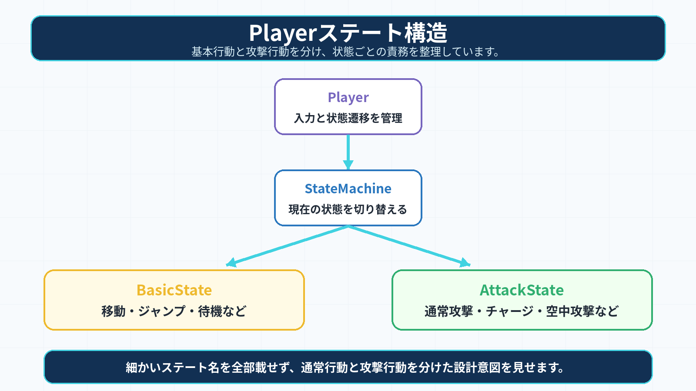
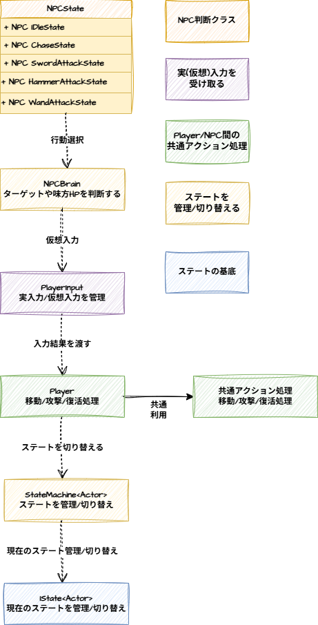
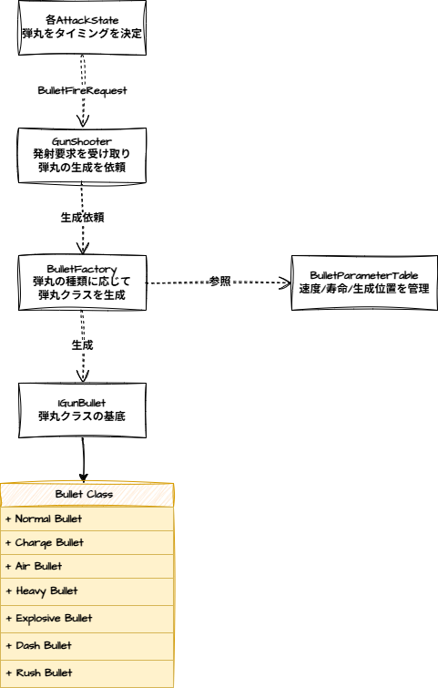

## ■ どう工夫したか
##   攻撃の土台となる「PlayerAttackBaseState」を作り、各攻撃技がそれを引き継ぐ階層型ステートの実装。
##   コンボルートやダメージ倍率は構造体のテーブルとして独立させ、ロジックから切り離しました。
##   また、テーブルの中から今の技に合うデータを探し出し適応するように実装しています。
## ■ 結果
##   コードを直接書き換えなくても、テーブルの数値をいじるだけで技の強さやコンボの繋がりを瞬時に変えられるようになり、拡張性が大きく向上しました。
****
-
7-3.テーブルによるコンボ/攻撃ステータス管理
■ 課題
攻撃ごとの派生条件やダメージ倍率をステートクラス内に直接書くと、技が増えるたびに条件分岐が増え、調整しづらかったりコードとしての可読性などあらゆる面で問題が発生しました。
■ どう工夫したか
コンボの派生条件は「ComboRouteTable」、攻撃ごとのダメージ倍率やクリティカル補正は 「AttackParameterTable」に分離しました。
ステート側では、現在の状態IDと入力条件をもとにテーブルを検索し、次の状態や攻撃パラメータを取得する形にしています。
■ 結果
攻撃ステート側の処理を増やしすぎず、コンボルートやダメージ倍率の調整をテーブル側で行えるようになりました。
これにより、アクションの調整作業とロジックの実装を分離でき、保守性と調整効率を高めることができました。
-
7-4. 旧入力システム VS 新入力システム
Adapterパターンによる入力責務の分離
■ 課題

■ どう工夫したか
AdapterPatternを導入し、物理コントローラークラスと仮想コントローラークラスに分離。
■ 結果
NPCはAIが仮想入力を送ることでPlayerと同じアクション処理を利用できるため、プレイヤー操作キャラクターとNPCキャラクターの挙動差を抑えられました。
また、入力デバイスの差し替えだけで操作キャラクターを変更できるため、キャラクター選択UIとの連携もしやすい構成になりました。

■ 結果
NPCはAIが見えないコントローラーを操作しているような形で動作するため、Player側の移動・攻撃・復活処理を活用しながらNPCを制御できました。
共通の入力経路を使うことで、プレイヤーとNPCの挙動差を抑えつつ、AI側の判断処理を独立して調整できるようになりました。
-
7-5.発射リクエスト/Factoryによる生成ステムの構築
■ 課題
銃キャラクターの攻撃を実装する際、各攻撃Stateが弾丸の生成、モデル情報、速度、寿命、発射位置、エフェクト通知まで直接持ってしまうと、ステートクラスが肥大化してしまう問題がありましたｓｓ
■ どう工夫したか
攻撃ステートからは「BulletFireRequest」として弾の種類・生成基準位置・発射方向だけを「GunShooter」へ渡す形にしました。
「GunShooter」は「BulletFactory」に弾丸生成を依頼し、「BulletFactory」側で「BulletType」に応じた弾丸クラスを生成します。
また、弾丸ごとの速度、寿命、生成位置補正は「BulletParameterTable」に分離し、モデル情報は「BulletModelRegister」から取得するようにしました。
発射時のエフェクトなどは「IBulletFireListener」へ通知することで、弾丸生成処理と演出処理を分けています。

■ 結果
攻撃ステートは発射タイミング/発射する弾丸の種類のみをしるだけとなり、生成処理やパラメータ管理を別クラスに分離できました。
その結果、弾の種類追加や速度調整を行う際の修正箇所を限定しやすくなりました。
-
7-6.データ駆動によるステージ読み込みシステムの構築
■ 課題
既存の設計ではステージごとにクラスを作成しており、ステージが増えるたびに同じような処理が増え、コピーコードが量産されていました。
■ どう工夫したか
ステージの情報を描画と座標やモデルパスなどの構成データに分離しました。
ステージごとの固有データは構造体にまとめ、LoadStageDataクラスが識別子を受け取るだけで、そのステージを自動で読み込めるように設計。
■ 結果
ステージがどれだけ増えてもクラス数は増えず、ステージデータの登録のみで運用できる形になり、開発効率が向上しました。
■ 結果
AIが「見えないコントローラー」を操作している状態になり、Playerのアクション処理を一切書き換えることなく、全く同じ挙動でNPCを動かすことに成功しました（コンポーネント指向の実現）。
8.今後の展望
-
リファクタリング
階層がステートパターンにイテレーターパターンを導入。
-
ステージの追加
こちらも同様に2～3種類追加予定です。
-
Ultimate Abilityの実装
ボスのHPの減少割合に応じてコレクションアイテムを出現させ、全て集めるとボスに大ダメージを与えれるように実装予定です。
9. リンク集

 PowerPoint版はこちら
PowerPoint版はこちら